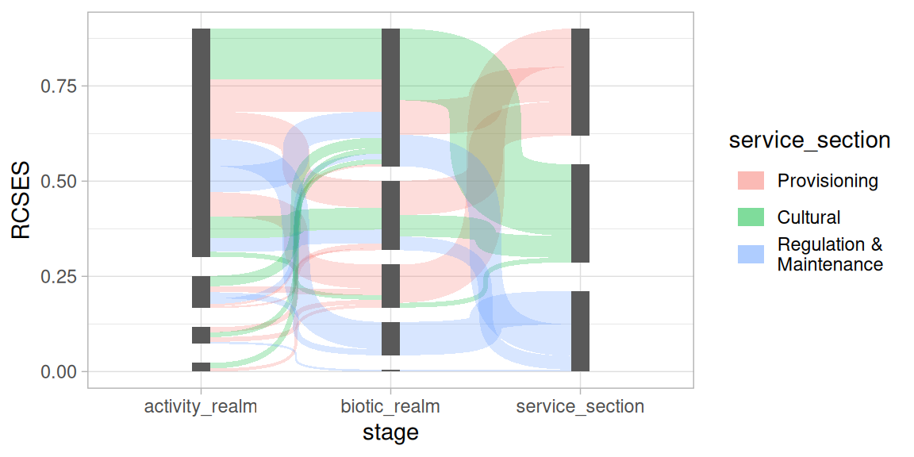

Decorating nodes and edges with aesthetics
With the waist aesthetic you can modify the shape of the
edge curve, this is presented in more detail in the Curve shape section. Here it is shown how Nodes
and edges can be decorated with the colour (border of nodes
and edges), fill (inside of nodes and edges), and
alpha aesthetics.
library(ggsankeyfier)
library(ggplot2)
theme_set(theme_light())
data("ecosystem_services")
## Let's subset the example data to create a less cluttered
## Sankey diagram
es_sub <-
ecosystem_services |>
subset(RCSES > 0.005) |>
pivot_stages_longer(c("activity_realm", "biotic_realm", "service_section"),
"RCSES", "service_section")
ggplot(
data = es_sub,
mapping = aes(x = stage, y = RCSES, group = node,
edge_id = edge_id, connector = connector, colour = stage)) +
## apply fill and alpha aesthetic only to edges (not the nodes)
geom_sankeyedge(aes(alpha = RCSES, fill = service_section)) +
geom_sankeynode() +
guides(fill = guide_legend(ncol = 1),
alpha = guide_legend(ncol = 1),
colour = guide_legend(ncol = 1)) +
theme(legend.position = "top")Note that both nodes and edges can be decorated separately. Also note that each variable that is assigned to one or more aesthetics will get its own guide legend. More about this in the section Keys and legends.
Additional layers
When you want to add additional layers to your plot (such as text
labels), it is important that those layers apply the same statistics and
positioning as the geom_sankeyedge or
geom_node layers. To illustrate we first need a base plot
onto which the layers can be added:
pos <- position_sankey(v_space = "auto", order = "ascending", align = "justify")
p <-
ggplot(
data = es_sub,
mapping = aes(x = stage, y = RCSES, group = node,
edge_id = edge_id, connector = connector))When you want to add additional layers and you want to let them line
up with the nodes and edges, all you need to do is: use a consistent
call to position_sankey() for all layers; and add the
stat_sankeyedge() when you want to line up your layer with
the edges in the sankey diagram. This is shown in the example below
where a ggplot2::geom_segment() layer is added to the
plot.
p +
geom_sankeynode(position = pos) +
geom_segment(aes(col = service_section),
position = pos, stat = "sankeyedge",
arrow = arrow(length = unit(0.2, "cm")))When you want to align your layer with the nodes in a diagram, you
need to add stat_sankeynode() to your layer. Below a
ggplot2::geom_bar() layer is added to the plot, which
appears as a normal geom_sankeynode() layer. This is
because they are very similar but mostly just differ in the positioning
and stats that are applied.
p +
geom_sankeyedge(aes(fill = service_section), position = pos) +
geom_bar(position = pos, stat = "sankeynode")Curve shape
The curves that connect the nodes in ggsankeyfier are
drawn as symmetrical widened Bézier
curves. The slope of the curve can be controlled with the
slope parameter. The curve becomes very steep when
slope = 1:
p +
geom_sankeyedge(slope = 1, position = pos, mapping = aes(fill = service_section)) +
geom_sankeynode(position = pos)
You could even go beyond the slope of 1, but then the
curve will start to zigzag. With values less than 1 will result in
gentler slopes.
We can also play with how much the curve is widened. By default the
width of the curve is constant along the Bézier curve it follows. By
setting the waist aesthetic, the width of the curve is
blown up, or shrunk down at its center. There are also
scale_waist_* functions (like
scale_waist_continuous()), which allow you to adjust the
appearance of the waist and its legend keys.
p +
geom_sankeyedge(aes(waist = RCSES, fill = service_section), position = pos) +
geom_sankeynode(position = pos)Keys and legends
Both nodes and edges have their own draw_key() function,
meaning that they are drawn automatically by
ggplot2::guide_legend(). When multiple aesthetics are based
on the same variable, they are combined in a single legend (where
possible). In order to make this work, you will use the same guide
("legend" in case of the example below) for both
scales.
p +
geom_sankeyedge(aes(waist = RCSES, fill = RCSES), position = pos) +
geom_sankeynode(position = pos) +
scale_waist_binned(guide = "legend") +
scale_fill_binned(guide = "legend")Different themes
At the top of this vignette we set
ggplot2::theme_light() as the default theme. It is also
possible to add themes directly to the plot:
p +
geom_sankeyedge(aes(fill = RCSES), position = pos) +
geom_sankeynode(position = pos) +
theme_void()To change the colour scheme of the coloured aesthetics, you need to add the appropriate colour scale. Let’s add some turbo colours to our diagram:
p +
geom_sankeyedge(aes(fill = RCSES), position = pos) +
geom_sankeynode(position = pos) +
scale_fill_viridis_c(option = "turbo")